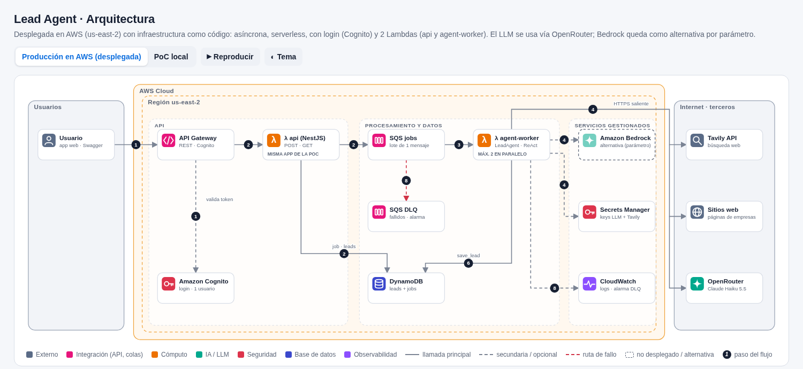
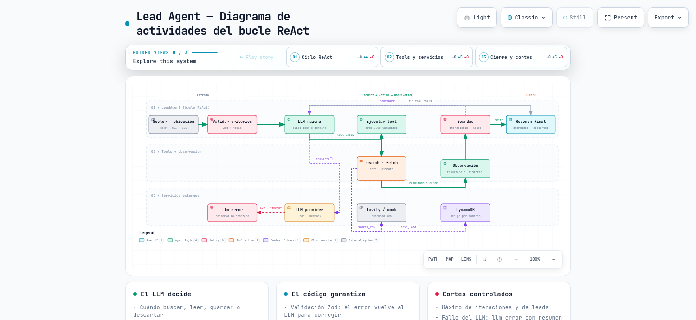

Lead Agent
Agente IA que busca empresas por sector y ubicación, extrae y cualifica sus datos con un LLM y los guarda en DynamoDB. Pruébalo en la aplicación web o explora los diagramas interactivos.
Aplicación web
Inicia sesión y busca leads por sector y ubicación: el agente corre en AWS (API Gateway, SQS, Lambda, DynamoDB) y muestra cada lead con su puntaje desglosado.

Arquitectura
Despliegue en AWS (Cognito, 2 Lambdas, SQS, DynamoDB) y ejecución local, con el flujo animado paso a paso.

Actividades del agente
Bucle ReAct: el LLM razona, elige un tool, observa el resultado y repite hasta terminar; guardas y cortes controlados.